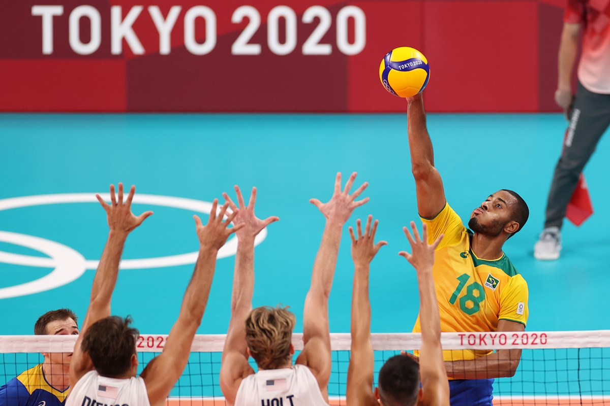
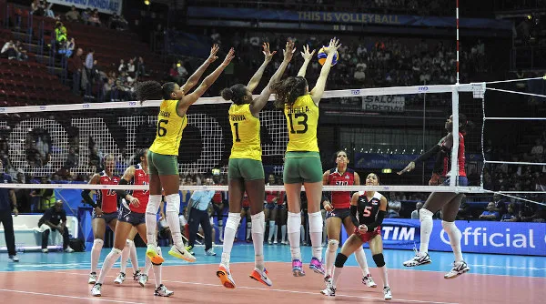

O vôlei, também chamado de volley ou voleibol, é um esporte de origem norte-americana do século XIX.
É um esporte de popularidade significativa em grande parte do mundo, e está presente em muitos torneios e eventos esportivos de âmbito internacionais, tais como os Jogos Olímpicos e os Jogos Panamericanos.
Pode ser praticado tanto em quadras abertas quanto em quadras fechadas, bem como é praticado quase que igualmente tanto por homens quanto mulheres.
A quadra de vôlei é atravessada por uma rede, que a divide em dois campos. Cada campo só pode ser ocupado pela sua respectiva equipe.
O objeto usado para a prática de vôlei é uma bola e o objetivo principal do jogo consiste na marcação de pontos ao mandar a bola para o campo adversário e fazer com que ela toque o chão.
A instituição responsável pela organização de eventos e da regulação das regras do vôlei é a FIVB, Fédération Internationale de Volleyball.
O voleibol foi inventado em 9 de Fevereiro de 1895 por William George Morgan nos Estados Unidos da América. O objetivo de Morgan, que trabalhava na ACM de Holyoke no Massachusetts, era criar um esporte de equipes sem contato físico entre os adversários de modo a minimizar os riscos de lesão. Inicialmente jogava-se com uma câmara de ar da bola de basquetebol e foi chamado Mintonette, mas rapidamente ganhou popularidade com o nome de volleyball. O criador do voleibol faleceu em 27 de dezembro de 1942 aos 72 anos de idade.
No início, o voleibol, por ser pouco violento, era considerado uma modalidade mais voltada para as mulheres. Com o passar do tempo, ele foi sendo difundido também entre os homens.
Primeiramente, o voleibol teve início no Nordeste, no Colégio Marista de Recife, em 1915. Nos anos seguintes, por meio da Associação Cristã de Moços da cidade São Paulo, ele começou
a se espalhar por outros estados. No entanto, foi somente em 1923, que o voleibol começou a ganhar força no Brasil.Isso ocorreu porque naquele ano foi organizado o primeiro campeonato de
voleibol no Rio de Janeiro, sendo o Fluminense o primeiro clube brasileiro profissional criado.
Atualmente, além da modalidade de quadra, o voleibol também é jogado na praia, conhecido como vôlei de praia.
Em 1954, foi fundada a Confederação Brasileira de Voleibol (CBV), sendo, ainda, a entidade responsável pelo esporte no país.
Após sua criação, muitas escolas de vôlei foram sendo criadas no país, o que promoveu a difusão do esporte.
O primeiro presidente da CBV foi o ex-jogador Denis Rupet Hathaway, que ocupou o cargo durante dois anos (1955 a 1957).
Graças ao trabalho desenvolvido pela CBV, atualmente o Brasil é um dos melhores países do mundo no voleibol.
O voleibol somente começa a se fortalecer no país na década de 70. No final dessa década, mais precisamente em 1977, o Brasil sediou o 1º Mundial Juvenil nas categorias masculina e feminina.
A seleção brasileira obteve como resultado o terceiro e quarto lugares, respectivamente.
Em 1951 o voleibol masculino teve seu primeiro grande destaque no Campeonato sul-americano. No entanto, foi na década de 80 que a seleção masculina, denominada na altura de "Geração de Prata",
começou a se consolidar no cenário mundial.
Essa geração conquistou uma vitória nos Jogos Pan-americanos de 1983. No ano seguinte, eles conquistaram a primeira medalha olímpica de prata nos Jogos Olímpicos de Los Angeles, em 1984.
O tão almejado ouro foi conquistado na década de 90. Em 1992, a seleção masculina venceu a final contra os Países Baixos nos Jogos Olímpicos de Barcelona, conquistando a primeira medalha de ouro.
A partir daí, o esporte ganhou notoriedade nacional e começou a receber grandes investimentos, desenvolvendo excelentes atletas. Isso, consequentemente, resultou nas conquistas posteriores.
Atualmente, as seleções brasileiras feminina e masculina de voleibol são consideradas uma das melhores do mundo.
Na categoria masculina, a seleção é tricampeã mundial (1992, em Barcelona; 2004, em Atenas; e 2016, no Rio de Janeiro) e já ganhou 6 medalhas olímpicas (3 de ouro e 3 de prata). Porém, nas
olimpíadas de París, a seleção brasileira não obteve um bom desempenho, terminando na oitava posição, a pior desde 1972. A equipe foi eliminada nas quartas de final pelos Estados Unidos por 3 a 1.
Já na categoria feminina, a seleção é bicampeã olímpica (2008, em Pequim; 2012, em Londres) e já ganhou 5 medalhas olímpicas (3 de ouro e 2 de bronze). O seu desempenho na olimpíada de Paris foi exepcional
, nos rendendo uma medalha de bronze que foi conquistada em um jogo apertadíssimo contra a Turquia.